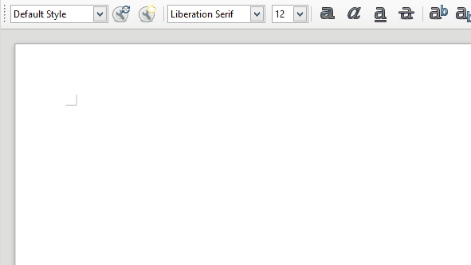
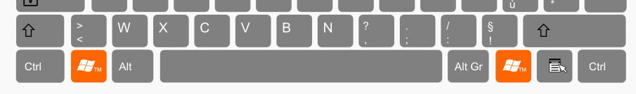
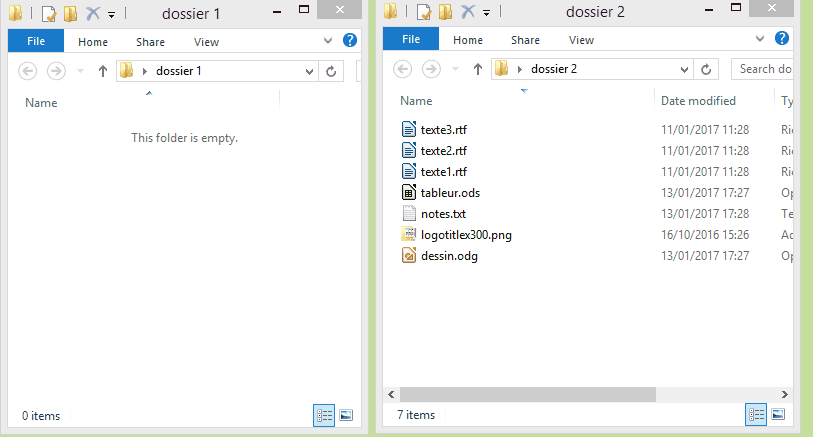

Souris et clavier
Les bases
Par jerome choain / @jcfrog
Interaction
Le clavier et la souris sont des périphériques
qui nous permettent de communiquer avec la machine.Plan
- La souris
- Le clavier
- Le copier coller, et autres astuces diaboliques :)
La souris
Le pointeur et le clic
"Clic" = un appui court sur le bouton gauche de la souris
"Double Clic" = 2 appuis courts consécutifs sur le bouton gauche de la souris
"Clic droit" = un appui court sur le bouton droit de la souris

Exercice : clics
Le glisser/déposer
Permet de déplacer un ou plusieurs éléments sélectionnés
- Clic bouton gauche et maintien de l'appui
- Déplacement
- Relachement du bouton
Exercice : glisser déposer
On peut aussi s'en servir pour déplacer des fichiers...
mais c'est dangereux.
Mieux vaut utiliser le clavier.
La souris et les textes
Un clic permet de positionner le curseur d'écriture.
La souris permet également de faire une sélection.
- Toute action se fait sur une sélection.
- Toute sélection a un début et une fin.
Sélection de plusieurs lignes
Clic = sélection vide
Exercice : texte et souris
Le clavier
Clavier AZERTY/QWERTY?
Les touches
- Fonctions multiples
- combinaisons
Les lettres
Les majuscules
Touches "majuscules"
On utilise une touche modificatrice
Un appui simultané : T = Maj + "t"
Touches "Verrouillage majuscules"
Une petite diode sur le clavier indique le verrouillage
Exercice : édition simple
Touches modificatrices
- caractère par défaut : en bas à gauche
- caractère en haut atteint grâce à la touche Majuscule
- caractère en bas à droite atteint grâce à la touche Alt Gr

Exercice : édition simple
La touche Entrée
Sert à passer à la ligne ou valider

Barre d'espace et ponctuation
Exercice : ponctuation
Les touches pour raccourcis
Servent à faire des combinaisons
Chaque programme a ses raccourcis
Quelques grands classiques des raccourcis
- Ctrl+S : Enregistrer (Save)
- Ctrl+O : Ouvrir (Open)
- Ctrl+N : Nouveau (New)
- Alt+TAB : change de programme actif (PC)
- Ctrl+Z : Annule la dernière opération (Undo)
- Ctrl+Y : Refait la dernière opération annulée (Redo)
- Ctrl+Roulette : Zoom
Exercice : édition avancée
La touche Echappe
"Escape" en anglais, sert en général à annuler une commande.
La touche TAB
Ajouter une tabulation
se déplacer entre les champs d'un formulaire.
Connue aussi pour le raccourci Alt+TAB
Exercice : tabulation
Le pavé numérique
Touches destinées au calcul
Verrouillage Numérique indépendant
Drôles d'accents
A utiliser séquentiellement
Accent, puis lettre : ^ puis o donne ô
Exercice : accents
Suppressions
"Suppr" supprime la sélection courante
Texte : "Suppr" supprime le caractère suivant
"Retour arrière" supprime le caractère précedent
Exercice : suppressions
Touches de déplacement
Déplacent par exemple le curseur d'écriture
Permettent aussi de déplacer le pointeur de fichier
Font des merveilles combinées avec Ctrl et Maj
Maj+Déplacement déplace la fin de sélection.
Ctrl+Déplacement amplifie le déplacement.
Exemple dans un texte
Exemple sur des fichiers dans un dossier
Exercice : déplacements
Touches Fonction
Exemple : F1 affiche l'aide
Exemple : Navigateur, F5 rafraichit la page
Touche Insertion
Touche Menu Contextuel
Touches Systeme
Exemple : Windows + E lance l'Explorateur de fichiers
Autre touches
Copier/Coller
Ctrl+C : copier / Ctrl+V : coller / Ctrl+X : couper
Exercice : Copier coller couper
Le presse papier
Le presse papier
Sélection source / Ctrl+X / clic destination / Ctrl+V
Sélection multiple
Maj+Clic : indique la fin de la sélection
Ctrl+Clic : ajoute ou retire de la sélection
